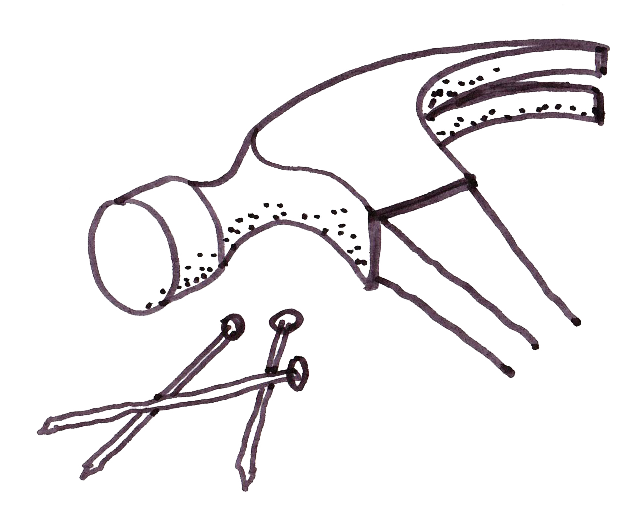

不能有锤子找钉子。
“if all you have is a hammer, everything looks like a nail” (如果你有一把锤子，所有东西看起来都像钉子)
第一句话是九月底X-lab加速计划一位做VC的学长讲的，第二句则是一句“古语”。学长的这句话大概是想反思一种技术创业思维的通病——我有XX技术，所以我要做一个OO事情。当然并不是说技术思维不好，锤子当然重要，至少比没有强，但过多强调锤子反而有可能忽视真正的钉子（用户需求）在哪儿。
不过这里并不想去讨论钉子（用户需求）的事情，而是想说说目标和过程。
你的目标是钉一颗钉子，所以别管是不是锤子，哪怕是一块砖头，钉进钉子去，目标就算达成了。在达成目标的过程中，我们可以不断打磨属于自己的工具，最适合你的可能不是一把锤子，最终形态是在你与目标的交互过程中形成的。也就是说我们钉钉子的过程中在不断打造属于自己的工具箱。“所有的路最终走向一条。”
微信的故事。
作为目前移动互联网最成功的应用（没有之一），微信是横空出世的产品么？1、17年前，张小龙是中国TOP10的程序员。他一个人写代码完成了Foxmail的头三个版本。2、Foxmail卖给腾讯后，他转做Web端的工具类产品QQmail，一开始并不成功，从客户端到Web，QQmail一开始非常臃肿，几乎无法使用。后来QQmail极大成功，这个过程花了三年。3、QQmail成功后开始试水Web端社交产品，先是阅读产品，成功，后做类似Twitter的QQ邮箱广播，失败。因为在邮箱的使用场景下，阅读空间的慢速阅读和深阅读是和邮箱调性相契合的，但是和快速流动的Tweets流却不能相容。这个过程花了大概两年。4、转型做QQ邮箱漂流瓶，实验轻SNS陌生交友，巨大成功。（以上四点详见和菜头博客）5、而后是移动互联网，微信。
在微信上我们几乎可以看到张小龙之前所打造的所有锤子。先是从客户端到Web端的邮箱产品的转换带来思想由“重”到“轻”的转换，与移动互联网的精神吻合。再是QQ漂流瓶对陌生交友的早期探索引导了后来摇一摇与附近的人的功能的诞生。还有阅读空间的成功与QQ邮箱广播的失败使团队在朋友圈功能的定位上不那么坚定，到现在双击相机单纯发布文字的功能仍属于实验。
再举个自己的例子，可能不那么贴切。以前喜欢杂七杂八看书，学习一些看似毫不相关的东西，但最近一段时间越发觉得它们之间有千丝万缕的联系。最早从《复杂》这本书知道了有门复杂科学的存在，知道了遗传算法，蜂群思想，生物进化。后来发现凯文凯利的书里也在讲这些观点。GB West等SFI的研究学者还把许多复杂科学的研究应用到的城市研究中，得到了很多让人惊喜的结果。再后来读行为经济学、博奕论，发现与复杂科学和网络科学有很强的关联，演化的思想不但可以用于生物进化也可以用于人的行为，是不是也可以用于城市空间？再后来自己对Python和R等工具软件很感兴趣，开始学习后发现，已经有人开始用它们分析空间问题，进行空间模拟。这个发现的过程伴随着欣喜和焦虑，喜的是自己正在构建属于自己的知识网络，虑的是原来这么多东西都已经有人研究过了，自己的空间在哪里？
自己现在欠缺的是提出一个好的问题，然后用打造的工具箱去解决它。
